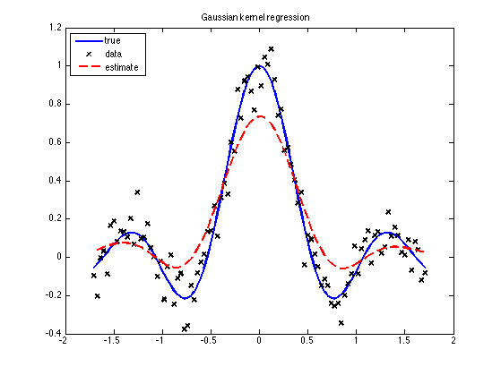

Kernel regression
% Use same data as in svmRegrDemo setSeed(0); N = 100; noise = 0.1; x = 10*[-1:2/(N-1):1]'; ytrue = sin(abs(x))./abs(x); y = ytrue + noise*randn(N,1); x = mkUnitVariance(centerCols(x)); r=kernelSmoothingRegression(x,y); plot(x,ytrue,'b-', x,y, 'kx', r.x,r.f,'r--','linewidth',2) legend('true','data','estimate','location','northwest'); title('Gaussian kernel regression') printPmtkFigure('kernelRegressionDemo')